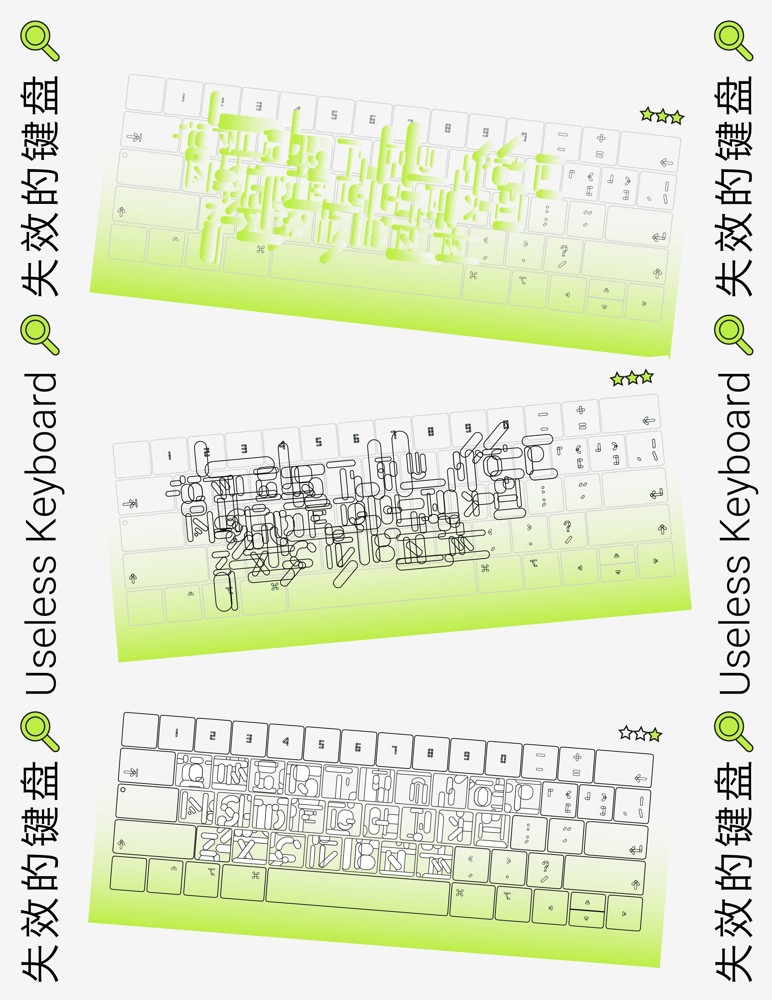

What's your space
Google Image Translation
What's your concept
Although the Google Image translation result is not satisfactory, the visual effect after translation looks pretty cool.
The texts are stretched and rotated, expressing a very straightforward, wild aesthetic. What's even more amazing is that some objects could also be translated, such as my apartment building, delivery boxes, shadows...
Compare the translation with the apartment building again and again, looking for clues. Which part looks like A, and which part looks like E... It's like I'm playing hide-and-seek with the letters.
What's your process
The apartment building was so familiar to me that I saw it as a pink row building. In "hide and seek", I imitate the mobile phone software, decomposition of images, break and put together...Fragmented images, information, recombination, means infinite possibilities. Unrelated items, images, and text can all be connected in series after being fragmented.
My artifacts are useless keyboards. I want to bring the users into a hide-and-seek world through the failed keyboards. The characters on keyboards do not exist in isolation, but are connected with each other.
Everything is connected. Can technology direct us to invisible relationships, or cause chaos?
Hide and Seek